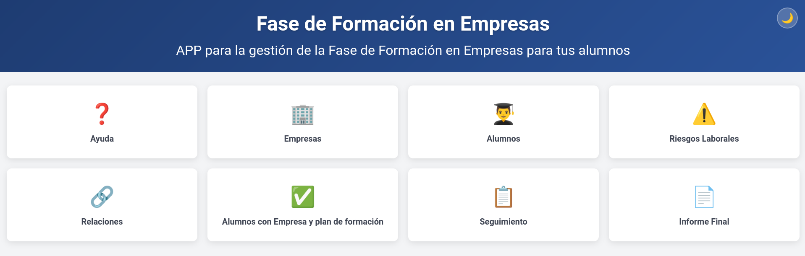
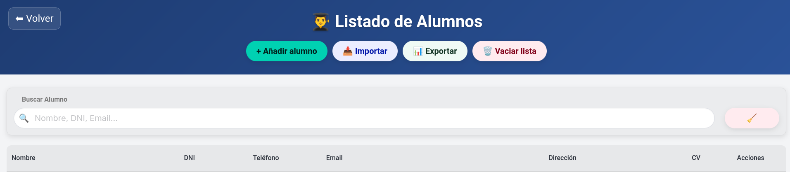
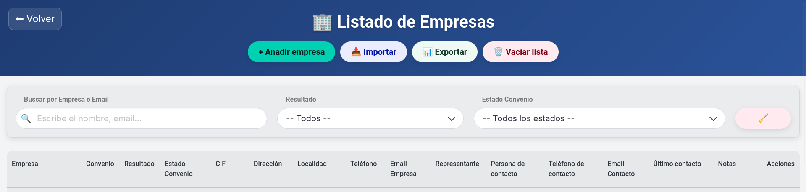

La plataforma digital definitiva diseñada especialmente para profesores y tutores de Formación Profesional. Organiza alumnos, convenios con empresas, riesgos laborales y el seguimiento diario sin complicaciones. Aplicación válida para windows, mac y linux.

Olvídate de las hojas de cálculo confusas y las carpetas de papeles. Todo el proceso unificado en una interfaz ágil y moderna.
Rellena todos los pdfs de forma automática con la información de tus alumnos y empresas.
Registra nombre, apellidos, currículums, datos de contacto y controla si disponen de abono transporte para las ayudas económicas de la Comunidad de Madrid.
Controla las organizaciones colaboradoras, representantes legales, localizaciones fiscales, centros de trabajo reales y el estado de sus convenios.
Genera la documentación relativa a la prevención de riesgos del alumno, lista para revisar y firmar por módulo profesional antes de su incorporación.
Asocia alumnos a sus empresas idóneas, gestiona múltiples propuestas de manera simultánea y bloquea la asignación definitiva al consolidarse.
Completa las fichas de control semanal o quincenal pactadas con los tutores de empresa de forma extremadamente rápida con nuestro contador de visitas.
Recoge la valoración final de la empresa, califica la aptitud del alumno y reúne de forma organizada todo el expediente exigido por secretaría.
Basado en la guía oficial integrada. Entiende las fases clave de las prácticas y cómo la aplicación te acompaña en cada una de ellas.
Antes de iniciar el periodo de prácticas, debes recopilar la información básica de tus alumnos. La app te permite introducir estos datos para automatizar el resto de documentos.

Para poder firmar un convenio de colaboración o asignar un alumno, es fundamental tener registrados todos los datos fiscales y de supervisión de la empresa colaboradora.

El convenio de colaboración es el marco legal que une al instituto y a la empresa. La aplicación cuenta con estados visuales (Pendiente, Tramitado, Firmado) para saber exactamente qué convenios están listos.
El proceso se oficializa a través de la aplicación FFE virtual de la Comunidad de Madrid. Es crucial seguir una secuencia estricta para evitar errores burocráticos.
Durante y al finalizar las prácticas, es obligatorio disponer de una serie de documentos firmados. La aplicación te detalla cómo estructurar este proceso para un orden impecable.
Las pantallas clave del sistema, construidas con un diseño limpio, altamente legible y pensado en la comodidad de uso diario.
Accede de un vistazo a toda la ficha de tus estudiantes. Introduce de forma ágil el número de NUSS, gestiona los archivos de sus currículums vitae y comprueba el tipo de abono transporte. Un buscador avanzado te permite localizar instantáneamente a cualquier estudiante por nombre, DNI o estado de asignación.
Gestiona todos tus colaboradores. Introduce el CIF, la dirección exacta y el Representante Legal. No vuelvas a perder un correo con el tutor de la empresa: ten su teléfono y email archivados en la misma ficha. El sistema monitoriza visualmente el estado del convenio para garantizar que ningún alumno empiece las prácticas de forma irregular.
Accede directamente al panel central de la aplicación y olvídate de las plantillas de Excel estáticas y desorganizadas.